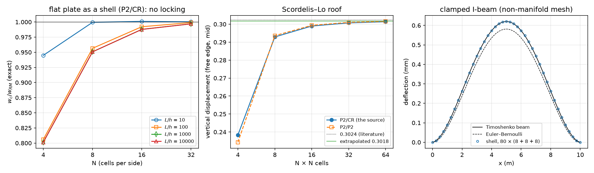
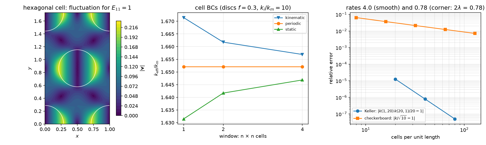

AI-based Materials and Process Simulation II
Week 09 — Shells on Surface Meshes · Periodic Homogenization with dolfinx_mpc
Process Systems Laboratory
Department of Chemical and Biomolecular Engineering, SeoulTech
Today
| Part | Topic | Time |
|---|---|---|
| Quiz on Week 8 (closed-AI) | 10 min | |
| A | Shells — a 2D mesh in 3D, the local frame, membrane + bending + shear, drilling | 35 min |
| B | Shell verification — plate, cylinder, Scordelis–Lo, an I-beam against beam theory; the source re-run | 25 min |
| C | Periodic homogenization — the cell problem, dolfinx_mpc, two silent traps, exact checks and bounds |
40 min |
| D | Cell boundary conditions and window size · LLM pitfalls · HW8 | 15 min |
Lab notebook: W09_lab.ipynb (≈ 80 min) · Homework: W09_HW8.ipynb (due before Week 10) · New package: dolfinx_mpc 0.11 — the setup cell installs it (≈ 1 min)
Part A · Shells on surface meshes
A 2D mesh in 3D
A shell is a surface with a thickness t. DOLFINx meshes it as triangles with 3D coordinates (topological dimension 2, geometric dimension 3) — no Gmsh needed:
- A cylinder, a roof, a plate tilted in space: map a structured parameter grid (s,t)\mapsto(x,y,z); a closed tube merges the seam.
- Non-manifold surfaces work: in an I-beam the web edge is the flange centre line — three cells meet at one edge (shared vertices).
- On such a mesh
ufl.grad(u)is a 3\times3 tangential gradient (derivatives along the surface only). - Flat facets: a curved shell is approximated by flat triangles → a geometry error O(h^2) (measured on the cylinder, Part B).
The local frame
Per cell: \mathbf e_3 = unit normal from the cell Jacobian, \mathbf e_1=\mathbf e_y\times\mathbf e_3 (or \mathbf e_z if \mathbf e_3\parallel\mathbf e_y), \mathbf e_2=\mathbf e_3\times\mathbf e_1. \mathbf P=[\mathbf e_1|\mathbf e_2] (3\times2) projects onto the tangent plane.
t = ufl.Jacobian(msh) # 3 x 2: the two edge vectors of the reference map
e3 = normalize(ufl.cross(ufl.as_vector([t[0, 0], t[1, 0], t[2, 0]]), ufl.as_vector([t[0, 1], t[1, 1], t[2, 1]])))
VT = fem.functionspace(msh, ("DG", 0, (3,))) # interpolate e1, e2, e3 into DG0: constant per cell
f = fem.Function(VT); f.interpolate(fem.Expression(e3, VT.element.interpolation_points))
P = ufl.as_matrix([[e1[i], e2[i]] for i in range(3)])The frame jumps from cell to cell — fine: strains are measured in each cell’s own frame, and the unknowns (\mathbf u, \boldsymbol\theta) are Cartesian, so they stay continuous.
Membrane, bending, shear
With \tilde\nabla(\cdot)=\nabla(\cdot)\,\mathbf P and the rotation of the normal \boldsymbol\beta=\mathbf e_3\times\boldsymbol\theta:
\boldsymbol\varepsilon=\operatorname{sym}(\mathbf P^T\tilde\nabla\mathbf u),\qquad \boldsymbol\kappa=\operatorname{sym}(\mathbf P^T\tilde\nabla\boldsymbol\beta),\qquad \boldsymbol\gamma=\tilde\nabla(\mathbf u\cdot\mathbf e_3)-\mathbf P^T\boldsymbol\beta
\int_\Omega t\,\mathbb C_{ps}\boldsymbol\varepsilon:\hat{\boldsymbol\varepsilon}+\frac{t^3}{12}\mathbb C_{ps}\boldsymbol\kappa:\hat{\boldsymbol\kappa}+\mu t\,\boldsymbol\gamma\cdot\hat{\boldsymbol\gamma} +\underbrace{\frac{Et^3}{h^2}\,d\,\hat d}_{\text{drilling}}\;dA=\int_\Omega\mathbf f\cdot\hat{\mathbf u}\,dA
- Membrane (\propto t) + Week 8’s Reissner–Mindlin plate (t^3, t) in every cell’s tangent plane; \mathbb C_{ps}: plane stress. Shear factor 1 (the source; 5/6 is also used).
- Space (the source): \mathbf u\in P_2^3, \boldsymbol\theta\in CR_1^3 (Crouzeix–Raviart: one value per edge midpoint, nonconforming).
- Drilling: \theta_3=\boldsymbol\theta\cdot\mathbf e_3 appears in no strain → singular matrix. Penalty on d=\tfrac12\big((\mathbf P^T\tilde\nabla\mathbf u)_{12}-(\mathbf P^T\tilde\nabla\mathbf u)_{21}\big)+\theta_3 (in-plane rotation of the membrane = drilling rotation).
Math → DOLFINx 0.11
| Math | Code |
|---|---|
| \mathbf u\in P_2^3, \boldsymbol\theta\in CR_1^3 | mixed_element([element("Lagrange", c, 2, shape=(3,)), element("CR", c, 1, shape=(3,))]) |
| \tilde\nabla\mathbf u | ufl.dot(ufl.grad(u), P) — grad is already tangential on a manifold mesh |
| \boldsymbol\beta=\mathbf e_3\times\boldsymbol\theta | ufl.cross(e3, th) |
| cell size h in the drilling stiffness | ufl.CellDiameter(msh) |
| clamped edge | u = 0 and theta = 0 on the edge facets (CR dofs sit on facets: locate_dofs_topological works) |
| point value | bb_tree → compute_colliding_cells → Function.eval (returns a flat array of 3 values in 0.11) |
| symmetry plane x=0 | u_x=0, \theta_y=\theta_z=0 — Cartesian components, because \boldsymbol\theta is Cartesian |
Check the solver
Without the drilling term MUMPS stops with KSP reason −11 (factorisation failed) — LinearProblem.solve() does not raise, the field is NaN. Read problem.solver.getConvergedReason().
Part B · Shell verification
A ladder of references

| Case | Reference | Result (this week, -np 2) |
|---|---|---|
| flat simply supported plate in 3D | exact Reissner–Mindlin w_K+\mathcal M/F (Week 8, F=\mu t) | N = 4, 8, 16, 32: 0.801, 0.951, 0.988, 0.997 at L/h=10^3 — the same at 10^4 (no locking) |
| the same plate rotated in space | the unrotated plate | deflection and energy equal to 4\times10^{-11} |
| open tube, internal pressure | membrane: u_r=pR^2/(Et), u_z=-\nu pRz/(Et) | u_r: 0.98880, 0.99708, 0.99921 (n_\theta = 16, 32, 64) — rate 2: flat facets |
| Scordelis–Lo roof | 0.3024 (literature) | 0.2383, 0.2929, 0.2990, 0.3007, 0.3014 (N = 4…64) → extrapolated 0.3018 |
| clamped I-beam, L/h_w=25 | Timoshenko beam, w=\frac{qL^4}{384EI}+\frac{qL^2}{8GA_s} | 1.00003, 1.0013, 1.0018 (refining) — a model difference, not an error |
What the ladder tells you
- Plate: P2/CR rotations and P2 rotations give the same numbers (0.9878 at N=16, L/h=10^3) — on flat triangles neither locks; the error is uniform in t (Week 8’s test). The drilling factor (0.01 … 100) changes the flat plate by 10^{-11}: there the drilling rotation is decoupled.
- Cylinder: facets approximate the circle → O(h^2) geometry error that no element choice removes (Week 2: curved mapped cells).
- Scordelis–Lo (membrane + bending, free edges, rigid diaphragms u_y=u_z=0): converges from below; the drilling factor now matters a little (0.30125 / 0.30074 / 0.30068 for 0.1 / 1 / 10 at N=32) — curved shells couple the drilling rotation through the facet kinks.
- I-beam: the shell converges to 1.0018 × the beam value: shear lag, web–flange shear flow, local web bending — the beam theory is the approximation here. Euler–Bernoulli alone would be 6.2 % off (the shear term).
The source re-run on 0.11
The source (curved I-beam, I_beam.msh, 1100 cells, f=(0,0.2,-1), “both ends clamped”) — the API ports unchanged; the numbers raise questions:
| max \vert u_y\vert (m) | |
|---|---|
| the source’s slides | 2.007694e-04 |
| the source’s notebook output — reproduced on 0.11 to every digit | 2.535546e-04 |
| clamp only the end sections (22 facets), \mathbf u=0 | 2.754e-04 |
| end sections, \mathbf u=0 and \boldsymbol\theta=0 (clamped) | 2.449e-04 |
- The beam is an arch (z from −0.22 to 1.59 m): y is the lateral direction, so “max \vert u_y\vert (vertical)” is the lateral response to the 0.2 load (\max\vert u_z\vert=8.5\times10^{-5} m).
- “Clamp x<x_{\min}+0.3” catches 26 facets: the 22 of the end sections plus 4 free flange edges; and only \mathbf u is fixed (“clamped” needs \boldsymbol\theta too).
- Lesson: print what a boundary marker selected (count, midpoints), not only how many dofs.
Part C · Periodic homogenization
The cell problem
A periodic microstructure (fibres in a matrix, pores in an electrode, inclusions in a gel) with period \ell\ll L: at each macroscopic point the strain is \mathbf E+\boldsymbol\varepsilon(\mathbf v), with a periodic fluctuation \mathbf v on the cell Y:
\int_Y\mathbb C(\mathbf y)\big(\mathbf E+\boldsymbol\varepsilon(\mathbf v)\big):\boldsymbol\varepsilon(\mathbf w)\,dY=0\quad\forall\mathbf w\ \text{periodic},\qquad \mathbb C^{\hom}\mathbf E=\langle\boldsymbol\sigma\rangle=\frac1{|Y|}\int_Y\mathbb C(\mathbf E+\boldsymbol\varepsilon(\mathbf v))\,dY
- Three load cases \mathbf E=(1,0,0),(0,1,0),(0,0,1) (Voigt, 2E_{12}) → three columns of \mathbb C^{\hom}; conduction: \mathbf G=\mathbf e_x,\mathbf e_y → \mathbf K^{\hom}.
- \langle\boldsymbol\varepsilon(\mathbf v)\rangle=0 for periodic \mathbf v (divergence theorem, opposite normals cancel) — the mean strain is \mathbf E.
- |Y| is the cell area — with voids, more than the meshed area.
- \mathbb C^{\hom} is symmetric and positive definite; the symmetry of the microstructure decides isotropy (square array: cubic; hexagonal array: isotropic in the plane).
dolfinx_mpc: periodicity as multipoint constraints
import dolfinx_mpc
mpc = dolfinx_mpc.MultiPointConstraint(V)
on = lambda a, b: np.isclose(a, b, atol=1e-8)
mpc.create_periodic_constraint_geometrical(V, lambda x: on(x[0], Lx) & ~on(x[1], Ly), lambda x: np.array([x[0] - Lx, x[1], x[2]]), bcs) # right <- left
mpc.create_periodic_constraint_geometrical(V, lambda x: on(x[1], Ly) & ~on(x[0], Lx), lambda x: np.array([x[0], x[1] - Ly, x[2]]), bcs) # top <- bottom
mpc.create_periodic_constraint_geometrical(V, lambda x: on(x[0], Lx) & on(x[1], Ly), lambda x: np.array([x[0] - Lx, x[1] - Ly, x[2]]), bcs) # corner
mpc.finalize()
v = dolfinx_mpc.LinearProblem(a, L, mpc, bcs=bcs, petsc_options=LU, petsc_options_prefix="cell_").solve()- Slave dofs (right, top) = master dofs (left, bottom). Install:
micromamba install -n fenicsx -c conda-forge dolfinx_mpc=0.11(2 packages, nothing else changes; the setup cell does it on Colab). - A periodic mesh (matching nodes) from Gmsh:
gmsh.model.mesh.setPeriodic(1, right, left, affine)— pair the pieces of the two sides in order. bcs: a Dirichlet pin for the rigid translation (the fluctuation is defined up to a constant).
Two silent traps
Exact test: a laminate (layers normal to y, f=0.3, E = 10 / 1, \nu = 0.2 / 0.3) — \mathbb C^{\hom} is known in closed form.
| constraint | max \vert\mathbb C^{\hom}-\mathbb C^{\text{exact}}\vert/\max\vert\mathbb C\vert | \vert C_{12}-C_{21}\vert |
|---|---|---|
| corner once, pin at an interior vertex | 5.9\times10^{-15} | 10^{-16} |
| pin the dof at (0,0) — a master of the periodic constraint | 6.1\times10^{-3} | 0 |
| both sides whole: the corner constrained twice | 2.7\times10^{-3} | 1.7\times10^{-3} |
Both traps are silent
No error, no warning. With the pin on a master dof dolfinx_mpc 0.11 returns a field whose pinned value is not zero (−0.038 in a conduction test). Rule: constrain the corner once; pin the translation at an interior vertex. Test with the laminate first.
Exact checks and bounds

| Check | Result |
|---|---|
| laminate: \mathbb C^{\hom} (elastic), arithmetic / harmonic mean (conduction) | 6\times10^{-15} / 4\times10^{-16} |
| Keller (any 2D two-phase geometry): k(k_1,k_2)\,k(k_2,k_1)=k_1k_2 | discs f=0.4, contrast 20: 1.3\times10^{-5}, 8.0\times10^{-7}, 5.1\times10^{-8} — rate 4 |
| checkerboard: k=\sqrt{k_1k_2} (Dykhne) | contrast 10: 6.4\times10^{-2} … 7.2\times10^{-3} — rate 0.78 |
| hexagonal array, f=0.3: isotropy (C_{11}-C_{12})/2C_{66} | 1.000000 (square array: 1.155 — cubic, not isotropic) |
| Hashin–Shtrikman (plane strain): K=\frac{C_{11}+C_{12}}2\in[1.39813,1.94954], G\in[0.59376,0.90944] | K=1.39814 (on the lower bound), G=0.59595 |
The checkerboard rate is set by the corner singularity \phi\sim r^\lambda, \lambda=\frac4\pi\arctan(1/\sqrt{10})=0.390: the energy converges as h^{2\lambda}=h^{0.78} — refine at the corners.
The source re-run on 0.11
Source cell: rectangle 1\times\frac{\sqrt3}2 with one disc (f=0.3), non-periodic Gmsh mesh (350 cells), corner pinned, both sides whole.
| C_{11} | C_{22} | C_{12} / C_{21} | C_{16} | |
|---|---|---|---|---|
the source’s output — reproduced on 0.11, -np 1 |
2.0213 | 2.0761 | 0.7764 / 0.7450 | 0.0219 |
the same script, -np 2 |
2.0056 | 2.0645 | 0.7446 / 0.7421 | −0.0016 |
corner once, interior pin (-np 1 = -np 2) |
2.0079 | 2.0730 | 0.7480 / 0.7480 | 10^{-6} |
- The defect shows up as an asymmetric matrix and as a result that depends on the number of ranks.
- The rectangle with one disc is a rectangular array, not hexagonal: C_{11}\ne C_{22} — the “isotropy check” could not pass.
- “E^* = 1.730 vs Mori–Tanaka 1.608 (7.9 %)”: C_{11}-C_{12}^2/C_{11} is the plane-strain modulus, the Mori–Tanaka formula used the plane-stress bulk modulus E/2(1-\nu) — the 7.9 % and \nu^* 0.371 vs 0.256 compare different quantities, not FE against theory.
Part D · Cell BCs and window size · LLM · HW8
Kinematic, periodic, static
| cell BC | fluctuation | gives |
|---|---|---|
| kinematic (affine) | \mathbf v=0 on \partial Y | an upper bound (too stiff) |
| periodic | \mathbf v periodic | the answer for a periodic medium — independent of how many cells you take |
| static (uniform traction / flux) | \boldsymbol\sigma\mathbf n=\boldsymbol\Sigma\mathbf n | a lower bound (too soft) |
Discs f=0.3, k_i/k_m=10, windows of n\times n cells: kinematic 1.6714 / 1.6618 / 1.6569, periodic 1.652044 (all n), static 1.6315 / 1.6417 / 1.6468 — the gap halves with n. A single laminate cell with kinematic / static BCs is 13 % / 52 % off.
Porous media (insulating pores, f=0.3): k=0.53758\,k_s, below the Hashin–Shtrikman bound (1-f)/(1+f)=0.53846.
What goes wrong in shell and homogenization codes
| Pitfall | Measured symptom (this week) |
|---|---|
| No drilling stabilization | KSP reason −11, NaN field, no exception |
| A box marker for “the ends” | free flange edges clamped too: 8 % less lateral deflection (curved I-beam) |
| “Clamped” with only \mathbf u=0 | a different support (here 12 % more lateral deflection) |
setPeriodic with the pieces of two sides in the wrong order |
Gmsh pairs the wrong edges (meshing error or a distorted mesh) |
Bounding boxes compared with 1e-9 in Gmsh/OCC |
OCC boxes are enlarged by ~10^{-7}: periodic sides not found, matrix removed |
Straight-sided discs (order=1) |
inclusion fraction 0.2999 instead of 0.3 — compare bounds at the actual fraction |
Strongly graded (very thin) cells with dolfinx_mpc |
“Newton method failed … non-affine geometry” on one rank, the other rank waits forever |
| An isotropy check on a cell that is not isotropic | square / rectangular arrays are not |
HW8 (due before Week 10)
Theory (shell strains, drilling, the mean-strain theorem, Keller) · the pressurized tube and the facet error · clamping an I-beam: what a marker selects · the Scordelis–Lo roof with symmetry · the checkerboard singularity and graded meshes · cell BCs and window size · an LLM-generated homogenization script with defects.
The setup cell installs dolfinx_mpc; the whole HW runs in a few minutes on Colab.
Summary
| Concept | Key point | DOLFINx 0.11 |
|---|---|---|
| Surface mesh | triangles with 3D points; non-manifold allowed | create_mesh(..., element(..., shape=(3,)), X) |
| Shell kinematics | membrane + bending + shear in the cell’s tangent frame; drilling penalty | ufl.Jacobian, DG0 frame, CR rotations |
| Shell checks | plate (exact RM), rotation invariance, tube, Scordelis–Lo, beam | Function.eval, KSP reason |
| Cell problem | periodic fluctuation; \mathbb C^{\hom}=\langle\boldsymbol\sigma\rangle over \vert Y\vert | dolfinx_mpc.MultiPointConstraint, LinearProblem(a, L, mpc, ...) |
| Traps | corner once, interior pin; symmetric, rank-independent | -np 1 vs -np 2 |
| References | laminate (exact), Keller, Dykhne, HS bounds, window bounds |
Next week: cohesive interfaces (intrinsic cohesive zones, submeshes) — and HW9.